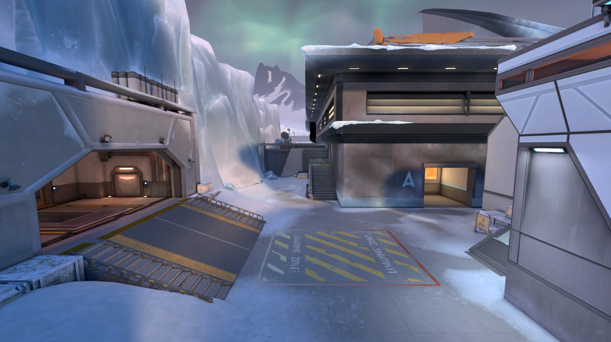
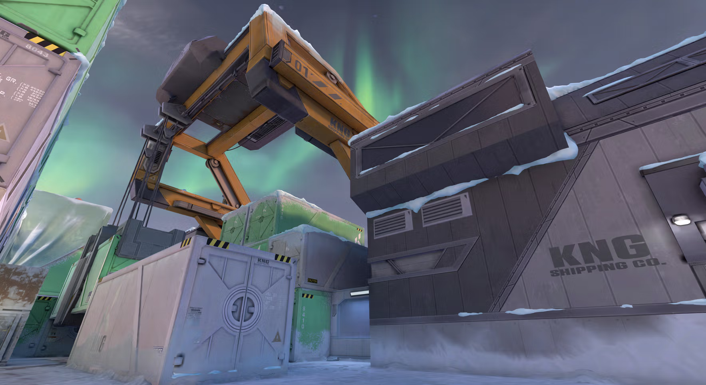
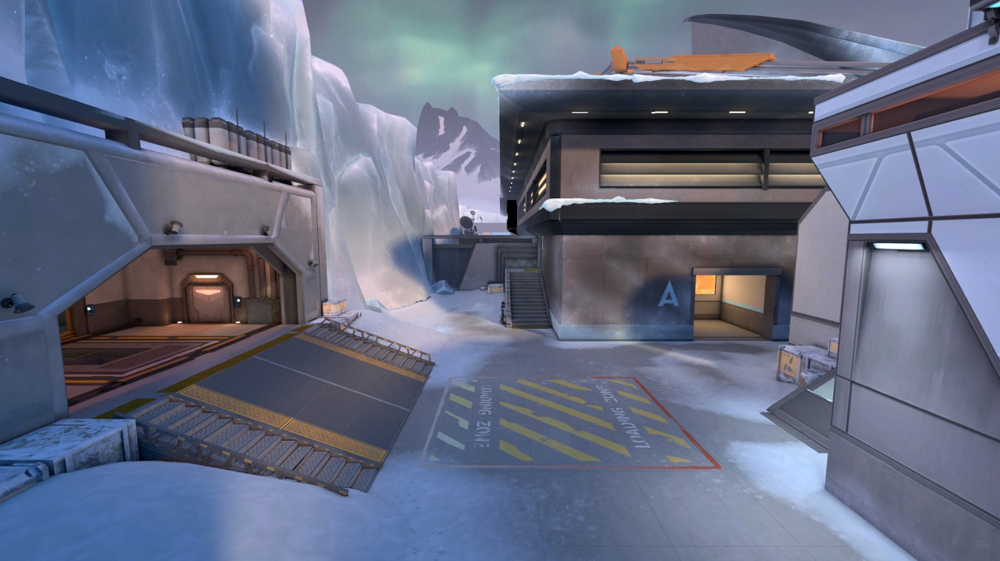
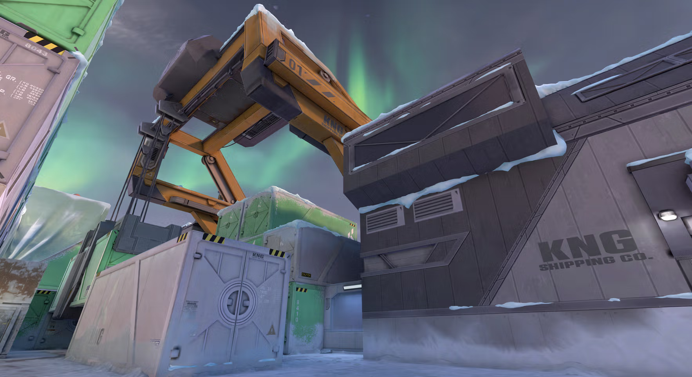
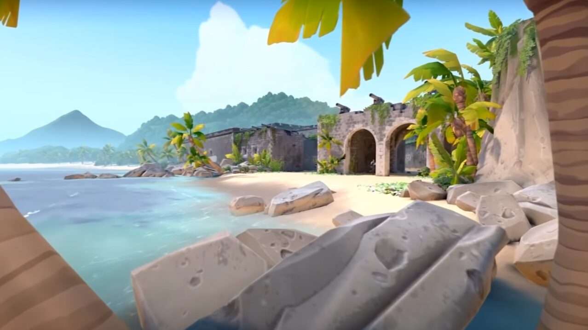
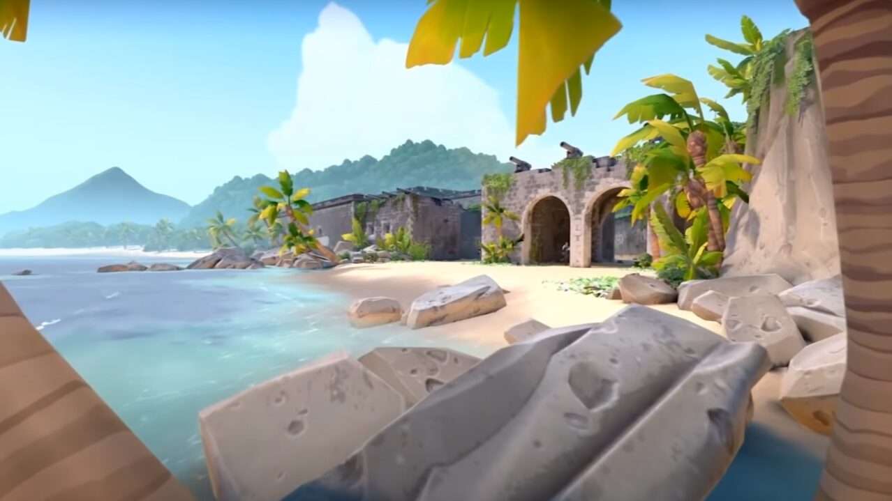

ICYLAND
Icyland is a fast-paced PALORANT map set in a snowy, industrial area. It features narrow corridors, tight chokepoints, and vertical elements, offering opportunities for strategic play. With two bomb sites, Icebox requires effective use of utility and quick rotations, making it a challenging map for both attackers and defenders.
 




FRAXURE
Fraxure is a unique PALORANT map with two bomb sites and a central orbital drop for quick rotations. It features multiple attack routes, ziplines, and vertical elements, requiring strong positioning and team coordination to control key areas. Its dynamic layout encourages creative plays and rewards teams that adapt quickly to changing situations.
BRIZZ
Brizz is a tropical island map in PALORANT featuring wide open spaces, long sightlines, and two bomb sites. Its design encourages long-range engagements, precise aim, and strategic use of cover. With multiple entry points and a mix of open and enclosed areas, Breeze requires smart positioning, utility usage, and teamwork to control key locations.
 

BINN
Binn is a balanced map set in a desert town, featuring two bomb sites and teleporters for quick rotations. It combines open spaces, tight corners, and multiple sightlines, requiring strategic use of utility and map control for both attackers and defenders. It also offers elevated positions and narrow underpasses, creating opportunities for flanks and dynamic tactical plays.
PERL
Perl is an underwater city map in PALORANT with two bomb sites, open spaces, tight chokepoints, and verticality. The map emphasizes strategic utility use, precise positioning, and strong teamwork for both attackers and defenders, making it dynamic and challenging.